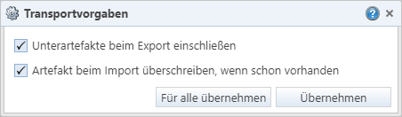
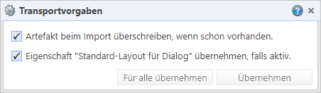
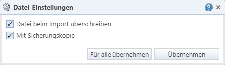
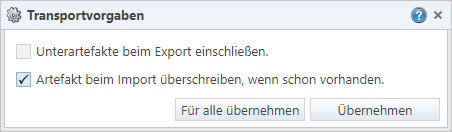
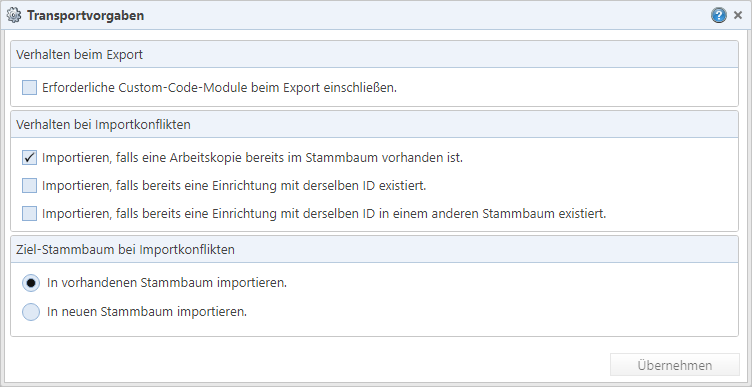
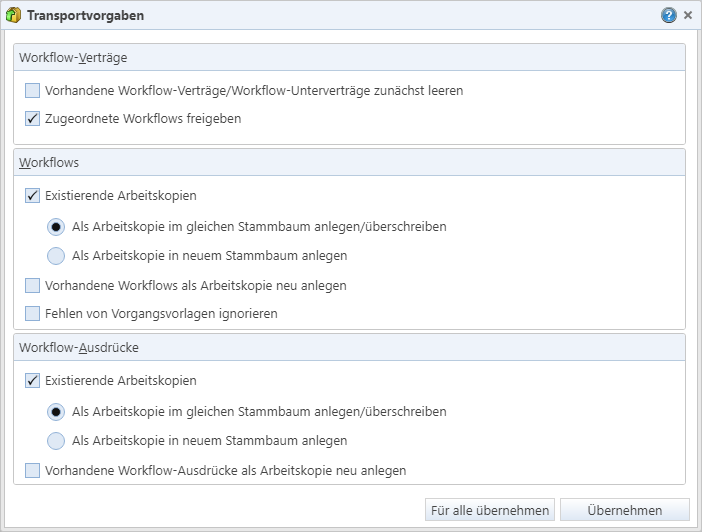

Extrahieren der Artefakte aus dem
Quellsystem beim Generieren von Paketdateien („Export“ aus dem Quellsystem)
Extrahieren der Artefakte aus dem
Quellsystem beim Generieren von Paketdateien („Export“ aus dem Quellsystem)Zusammenhänge
Transportvorgaben sind Einstellungen, die das Verhalten für folgende Bestandteile des Transportprozesses festlegen:
Extrahieren der Artefakte aus dem
Quellsystem beim Generieren von Paketdateien („Export“ aus dem Quellsystem)
Installieren der Artefakte in das
Zielsystem („Import“ in das IKAROS-Zielsystem)
Die Vorgaben sind notwendig, da die Artefakte in Massenprozessen gesammelt und installiert werden und das TRMS und IKAROS dabei nicht für jeden Zweifelsfall (z. B. abhängige Objekte mit ins Paket aufnehmen?) oder Konfliktfall (vorhandenes Objekt überschreiben?) eine Meldung anzeigen sollen.
Für jedes einzelne Artefakt werden vom TRMS zunächst die Standard-Transportvorgaben eingestellt, Sie können diese jedoch für jedes Artefakt manuell ändern. Mit der Schaltfläche „Für alle übernehmen“ können Sie die angezeigten Transportvorgaben auf alle gegenwärtig als ausgewählt markierten Artefakte derselben Gruppe übertragen (auf danach neu ausgewählte Artefakte wirkt sich dies hingegen nicht aus. Die Schaltfläche ist nicht verfügbar, wenn die Transportvorgaben aus der Übersicht der gewählten Artefakte heraus [Link] aufgerufen werden).
Welche Vorgaben Sie im Dialog für die Transportvorgaben einstellen können, hängt vom Typ des Artefakts ab.
Sie können den Dialog mit den Transportvorgaben für ein Artefakt an zwei Stellen aufrufen und die Vorgaben bearbeiten:
Per Schaltfläche „Transportvorgaben“ im
Artefaktpaket-Assistenten sowie
durch Aufruf eines bestimmten Artefakts
im Dialog mit der Übersicht der Artefakte (Schaltfläche „Übersicht anzeigen“
[Link]).
Artefakt-Gruppe „Weitere Artefakte“
Die folgenden Vorgaben sind für alle Artefakte verfügbar, zu denen in der Logikschicht von IKAROS („Business Objekt Model“) eigene Objektklassen existieren (z. B. Vorgangsvorlagen, EP-Verträge usw.).

Abb. 12: Vorgaben für Artefakte, zu denen Objektklassen in der IKAROS-Logik existieren
Kontrollkästchen „Unter-Artefakte beim Export
einschließen“ (oder ähnlich lautend): Legt fest, dass zu einem
Artefakt gehörige abhängige Artefakte automatisch mit transportiert werden
sollen (beispielsweise bei Aktenvorgangsvorlagen die
Aktenvorgangsvorlagenkategorien oder bei Kostentabellen die dazugehörigen
Einträge).
- Falls alle Unterartefakte fest zum Artefakt gehören, werden diese immer mittransportiert. Das Kontrollkästchen ist in diesem Fall deaktiviert, aber gefüllt. Dies gilt auch für Artefakte, deren Unterartefakte lediglich Übersetzungen sind.
- Ob im Kontrollkästchen ein Häkchen voreingestellt ist, unterscheidet sich zwischen Artefakt-Type. Beispielsweise bei Corporate Designs ist das Häkchen standardmäßig nicht gesetzt, bei Aktenvorgangsvorlagen hingegen schon.
- Bei einigen Artefakten ist das Kontrollkästchen individueller beschriftet. Beispielsweise bei Kalendern „Die Sachbearbeiter, die zum Kalender zugewiesen sind, beim Export einschließen“. Funktional ist das Kontrollkästchen identisch.
Kontrollkästchen „Artefakt beim Import überschreiben,
wenn schon vorhanden“: Legt fest, ob das Artefakt überschrieben
werden soll, falls es bereits im Zielsystem vorhanden ist. Hierbei werden für
die Gleichheitsprüfung sowohl technische Primärschlüssel (meistens GUIDs) als
auch sprechende Schlüssel (z. B. Kürzel wie bei Vorgangsvorlagen)
herangezogen.
Umgang mit Unterartefakten beim Überschreiben: Falls das Überschreiben aktiviert ist, wird das Artefakt selbst im Zielsystem aktualisiert. Das Verhalten im Umgang mit Unterartefakten im Zielsystem hängt von der Transportvorgabe „Unterartefakte beim Export einschließen“ ab:
- Unterartefakte eingeschlossen (Häkchen gesetzt): Alle Unterartefakt aus dem Zielsystem werden so angepasst (aktualisiert, hinzugefügt oder gelöscht), dass sie dem Zustand aus dem transportierten Paket entsprechen. D. h. eventuell vorhandene werden gelöscht oder geändert und neue werden ergänzt.
- Keine Unterartefakte (kein Häkchen): Es wird nur das übergeordnete Artefakt aktualisiert. Zum Beispiel bei einem Kostenvertrag würden dadurch alle Vertragspositionen im Zielsystem unverändert bleiben (keine Änderungen, Löschungen oder Ergänzungen).
Artefakt-Typ „Listenansichten“

Abb. 13: Transportvorgaben für Listenansichten
Kontrollkästchen ‚Eigenschaft „Standard-Ansicht für
Bereich‘ übernehmen, falls aktiv.‘ und ‚Eigenschaft „Standard für ‘Favoriten‚
und ‘Zuletzt besuchte Einträge‚ übernehmen, falls aktiv.‘: Legt
fest, dass der jeweilige Standard-Status auch im Zielsystem zum transportierten
Artefakt verschoben wird, falls das Artefakt auch im Quellsystem diesen Status
hat. Wenn die Option nicht angehakt ist (oder das Artefakt gar nicht den
Standard-Status hat), wird das Artefakt ebenfalls transportiert, aber im
Zielsystem nicht zum jeweiligen Standard gemacht.
Artefakt-Typ „Dialog-Layouts“

Abb. 14: Transportvorgaben für Dialog-Layouts
Kontrollkästchen ‚Eigenschaft „Standard-Layout für
Dialog‘ übernehmen, falls aktiv.‘: Legt fest, dass der jeweilige
Standard-Status auch im Zielsystem zum transportierten Artefakt verschoben wird,
falls das Artefakt auch im Quellsystem diesen Status hat. Wenn die Option nicht
angehakt ist (oder das Artefakt gar nicht den Standard-Status hat), wird das
Artefakt ebenfalls transportiert, aber im Zielsystem nicht zum jeweiligen
Standard gemacht.
Artefakt-Typ „Expertensystem-Experten“

Abb. 15: Transportvorgaben für Expertensystem-Experten
„Unterartefakte beim Export
einschließen“ ist immer ausgewählt, weil die Merkmale und
Klassen, die in der Expertendefinition verwendet werden, immer mit transportiert
werden.
Hinweis: Das Generierungsprotokoll des Experten wird nie transportiert, weil es für die eigentliche Verwendung nicht erforderlich ist und es außerdem Verknüpfungen zu Akten enthalten könnte, die es im Zielsystem des Transports gar nicht gibt.
Kontrollkästchen „Experten-Selektion beim Export
einschließen.“: Legt fest, ob die im Experten definierten
Filterkriterien („Selektion“) mittransportiert werden sollen. Diese sind nur für
das initiale Lernen/Generieren des Experten relevant. Für seine tatsächliche
Verwendung in Akten nach der Generierung sind sie nicht erforderlich.
„Artefakt beim Import überschreiben,
wenn schon vorhanden“: Legt fest, ob der Experte im Zielsystem
überschrieben werden soll, wenn er dort schon vorhanden ist. Dabei werden nicht
nur die Merkmale und Klassen des Experten überschrieben, sondern es werden auch
eventuell schon generierte Dateien (z. B. LearningData.csv) gelöscht.
Kontrollkästchen „Generierte Expertendaten beim Export
einschließen.“: Legt fest, ob die gelernte, fertige Datenbasis
des Experten (quasi sein „Wissen“) mit transportiert werden soll.
- Kein Häkchen (Standard): Das TRMS legt den Experten im Zielsystem mit Status „Angelegt“ an und das Lernen/die Generierung muss im Zielsystem neu durchgeführt werden, bevor eine Verwendung in Akten möglich ist. Das Neu-Generieren ist insbesondere dann empfehlenswert, falls die Aktenkonstellationen im Zielsystem so stark vom Quellsystem des Experten abweichen, dass das „Wissen“ des Experten für das Zielsystem keine ausreichende Aussagekraft besitzt.
- Häkchen gesetzt: Das TRMS transportiert auch die produktiven Expertendaten (sein gelerntes „Wissen“) in Form der Dateien „DecisionTree.joblib“ und „DecisionTree.pmml“. Der Experte kann im Zielsystem ohne erneuten Lern-/Generierungsprozess eingesetzt werden.
Voraussetzung für den Transport der Expertendaten: Der AppPoolBenutzer des TRMS-Anwendungs-Servers (TRMS-ServiceHost) muss direkten Schreibzugriff auf dasjenige Verzeichnis haben, dass in der IKAROS-Systemeinstellung „Verzeichnis für das Expertensystem“ sowohl im jeweiligen Quell- als im Zielsystem hinterlegt ist.
Hinweis: Die „rohen“ Lerndaten („LearningData.csv“) werden aufgrund ihrer potenziellen Größe nie transportiert.
- Kontrollkästchen „Sicherungskopie von generierten Expertendaten beim Überschreiben.“: Diese Option ist nur aktiviert, wenn „Generierte Expertendaten beim Export einschließen.“ angehakt ist.„. Sie legt dann fest, ob für eventuell im Zielsystem vorhandene Expertendaten Sicherungskopien erhalten bleiben sollen, indem alle vorhandenen Dateien nach dem Muster “<Dateiname>_BACKUP" umbenannt werden.
Artefakt-Typ „Expertensystem-Merkmale“
Artefakte des Typs „Expertensystem-Merkmale“ können auch einzeln transportiert werden (also nicht nur als Unterartefakt von „Expertensystem-Experten“).
Die Transportvorgaben beim Einzeltransport sind die beiden Standard-Optionen für die Gruppe „Weitere Artefakte“ Abb. 12.
Verhalten der Option „Unterartefakte beim Export einschließen“:
Kein Häkchen
(Standard): Es wird nur das Merkmal selbst mit seinen Eigenschaften und seiner
Custom-Code-Programmierung transportiert wird – aber ohne die Verweise, in
welchen Experten es im Quellsystem genutzt wird.
Häkchen gesetzt: Wenn
Sie die Option hingegen anhaken, sind die Verweise im TRMS-Paket enthalten. Aber
sie werden im Zielsystem nur angelegt, wenn die betreffenden Experten dort
tatsächlich vorhanden sind. Falls nicht, wird das Merkmal trotzdem transportiert
und fehlende Verweise werden im Transprotokoll notiert.
Artefakt-Gruppe „Dateien aus Dateisystem“

Abb. 16: Transportvorgaben für Dateien
Kontrollkästchen „Datei beim Import
überschreiben“: Legt fest, ob die Datei, falls eine gleichnamige
im Zielsystem bereits vorhanden ist, überschrieben werden soll. Ist diese Option
nicht angehakt, wird die Datei nicht ins Zielsystem importiert, falls eine
gleichnamige bereits vorhanden ist.
Kontrollkästchen „Mit Sicherungskopie“:
Soll, falls eine vorhandene Datei überschrieben wird, eine Sicherungskopie von
der ursprünglichen Datei angelegt werden? Diese Option kann nur aktiviert
werden, wenn das Überschreiben aktiviert ist.
Hinweis: Die Sicherungskopie wird im selben Ordner wie die ersetzte Datei abgelegt und erhält immer denselben Dateinamen: Den Namen der ersetzten Datei mit eingefügtem Ausdruck „_BACKUP“ vor der Dateiendung (z. B. „Fs.Ikaros.Core.CustomCode.Udt.Data_BACKUP.dll“). D. h. wenn Sie den Transport einer bestimmten Datei wiederholt durchführen, wird ihre schon vorhandene Sicherungskopie wiederholt überschrieben. Vorherige Sicherungskopien gehen somit verloren.
Hinweis: Beachten Sie, dass transportierte Dateien immer nur in einem Zwischenordner „\TRMS“ in der Zielumgebung abgelegt werden (Pfad: IKAROS-Systemeinstellung „Dateiablageverzeichnis des Anwendungs-Servers“ zzgl. „\TRMS“) und manuell in die produktiven Ordner verschoben werden müssen.
Artefakt-Gruppe „Reports (MS Reporting Services)“

Abb. 17: Transportvorgaben für Report-Definitionen
Kontrollkästchen „Artefakt beim Import überschreiben,
wenn schon vorhanden“: Soll der Report beim Installieren in den
Zielsystemen überschrieben werden, falls er dort schon existiert?
Reihenfolge: Datenmodell und Workflow-Artefakte

Abb. 18: Reihenfolgedialog für Artefakte
Als Transportvorgabe für Datenbankobjekte, Datenbankskripte und Workflow-Artefakte können Sie in einem Dialog die Reihenfolge festlegen, in der die zugrundeliegenden SQL-Skripte/Pakete beim Transport in der Zieldatenbank ausgeführt werden.
Wenn Sie den übergeordneten Knoten „Datenmodell“ markieren und den Dialog öffnen, können Sie darin übergreifend die Reihenfolge sowohl von SQL-Skripten als auch Datenbankobjekten bestimmen.
Die Reihenfolge gilt absteigend: Zuerst wird das oberste Artefakt im Zielsystem installiert, danach das darunter usw.
Artefakt-Gruppe „Custom Code“

Abb. 19: Transportvorgaben für Custom-Code-Artefakte
Die Transportvorgaben für Custom-Code-Einrichtungen entsprechen den Optionen, die auch beim manuellen „Massenimport“ von Custom-Code-Einrichtungen in IKAROS gewählt werden können (s. Kapitel mit ID „fs_893cf53319b7“ in der IKAROS-Hilfe).
Kontrollkästchen „Erforderliche Custom-Code-Module beim Export einschließen“: Die Vorgabe, ob die in den Artefakten verwendete Custom-Code-Module („requiredModul()“) automatisch mitexportiert werden sollen, wird beim Export in IKAROS per Abfrage durch den Nutzer bestimmt. Im TRMS entscheidet darüber die Transportvorgabe „Erforderliche Custom-Code-Module beim Export einschließen“. Das Häkchen ist standardmäßig nicht gesetzt, sodass kein automatischer Export/Transport erfolgt. Module, deren Namensraum mit „Fs.“ beginnt, werden grundsätzlich nicht exportiert, weil sie in jedem IKAROS-System zum Lieferumfang gehören und nicht kundenspezifisch geändert werden können.
Artefakt-Gruppe „Workflow-Management“

Abb. 20: Transportvorgaben für Workflow-Aktualisierungs-Pakete
Die Transportvorgaben für Workflow-Artefakte entsprechen den Optionen, die auch beim manuellen Einspielen von Workflow-Paketen in IKAROS gewählt werden können (s. Kapitel mit ID „fs_46b745011973“ in der IKAROS-Hilfe).
Je nach Typ des Workflow-Artefakts sind einige der Einstellungen nicht anwendbar, weshalb die entsprechenden Optionen im Dialog deaktiviert sind.